Wall murals · Canvas · Doodle · Line art · Handmade
Art for extraordinary spaces.
Soni turns walls, canvases and everyday corners into something personal, playful and full of life. 8+ years of art and painting, made by hand.
Hand-painted for cafes, homes and the places you love
- Wall Murals
- Canvas Paintings
- Doodle Art
- Line Art
- Handmade Pieces
- Home Makeovers
- Portraits
- Commissions
The studio
Beyond walls.
Whole worlds.
Colour is her language, and every wall a blank page. From huge cafe murals to quiet, detailed line art, always led by colour, characters and nature.
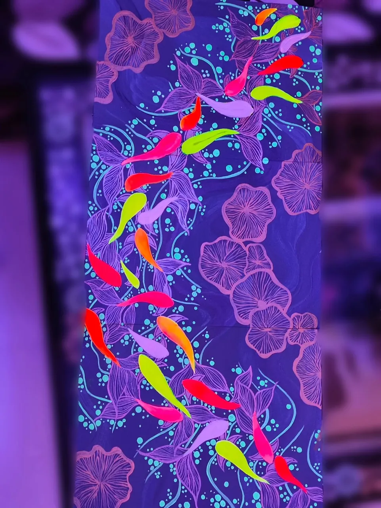


01 · Wall murals
Walls with something to say.
Hand-painted murals for cafes, homes and spaces with personality. Drag to see the same cafe mural in progress and finished, two real stages of the work.

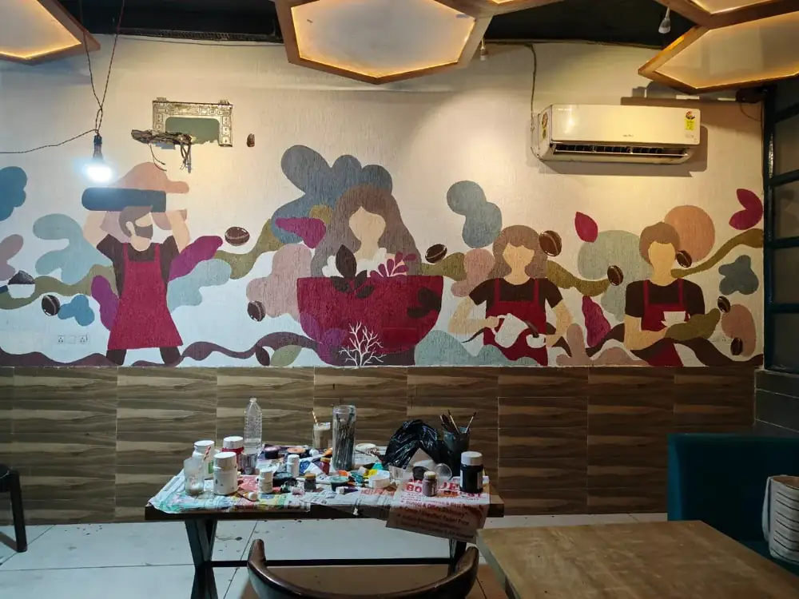
- Portrait mural
Colour in full bloom
A bold face framed by flowing leaves, flowers and layers of colour.
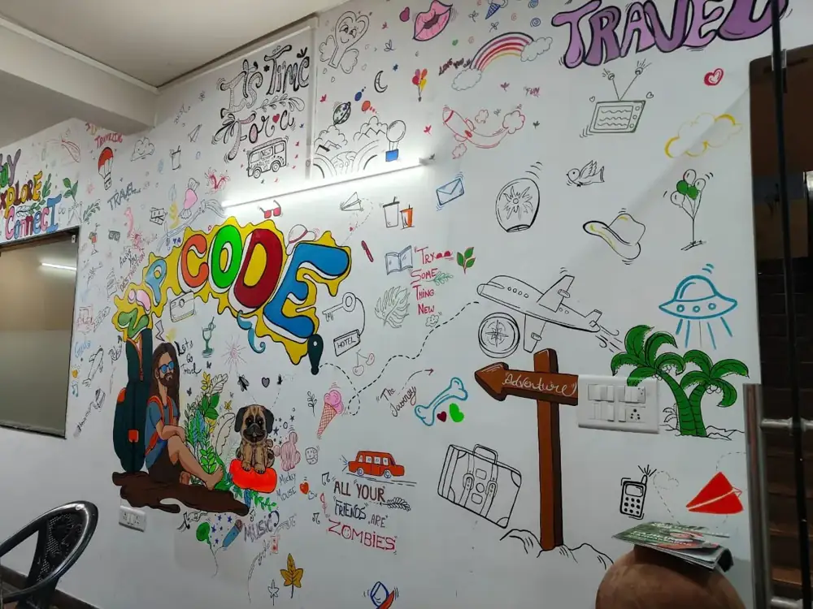
Doodle artA wall of little adventures
Travel motifs, playful lettering and tiny illustrated details across a whole room.
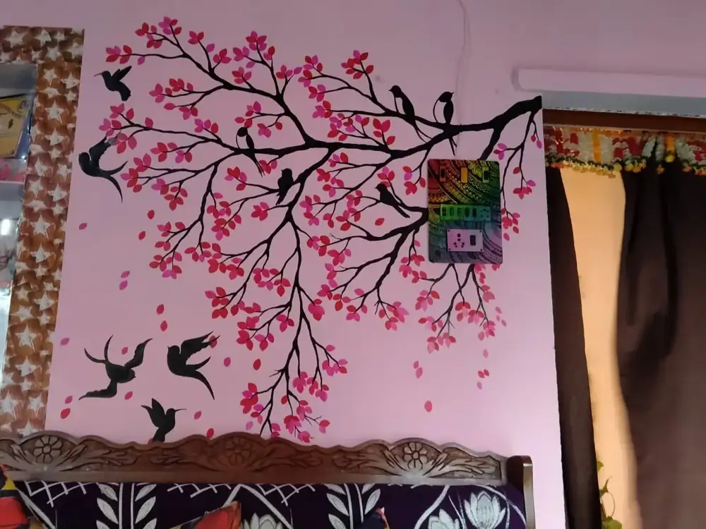
Wall paintingBranches, blossoms & birds
Bird silhouettes and pink blossoms spread across branching lines.
02 · Paintings
A little art, a lot of character.
Canvas paintings, line work and pieces made by hand: faces, flowers, peacocks, lotuses and moonlit colour.
See the collection
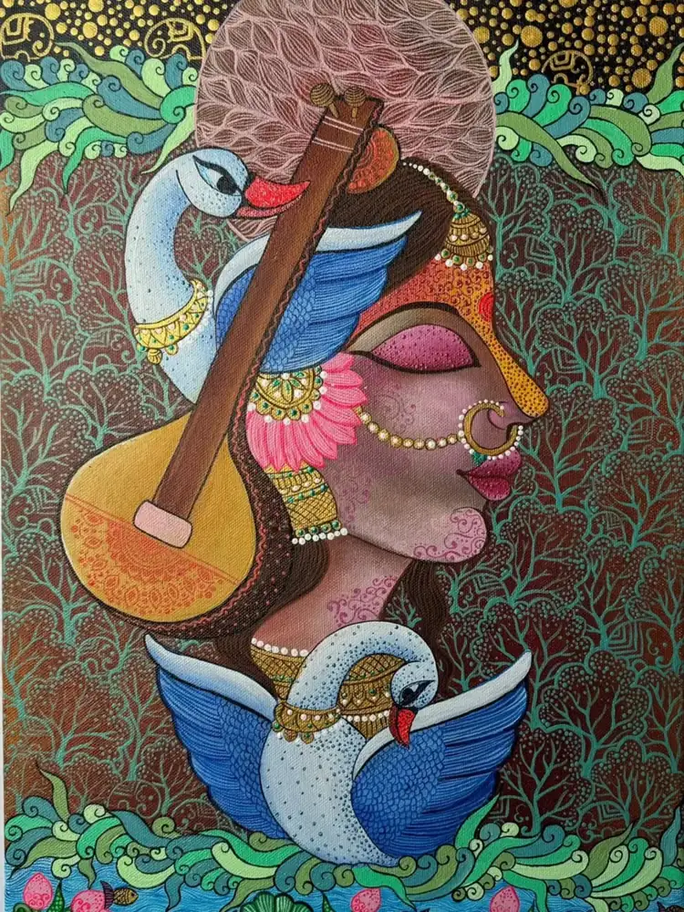
What Soni makes
One artist. Many ways to bring colour into your life.
Walls, canvases, corners and whole rooms, made to fit the space they live in.
- 01
Wall murals
Cafes & homes
- 02
Canvas paintings
Framed & ready
- 03
Doodle art
Playful walls
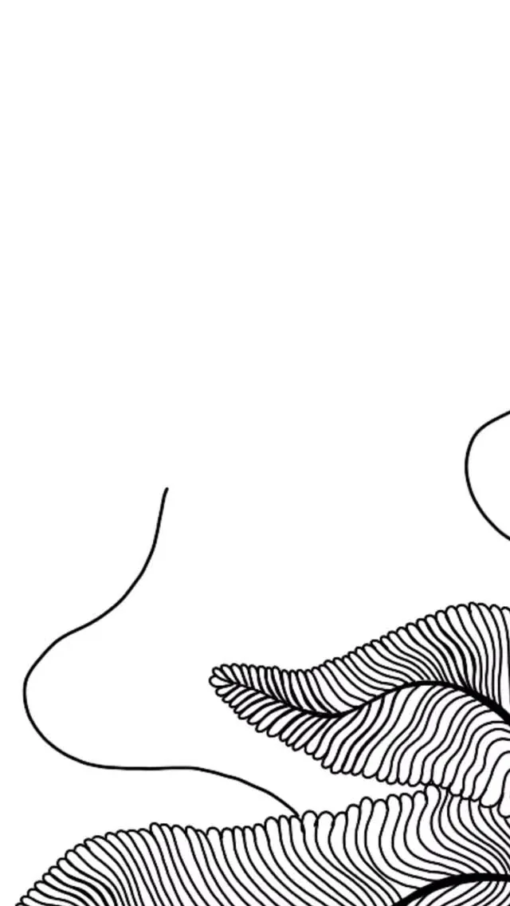
04Line art
Quiet detail
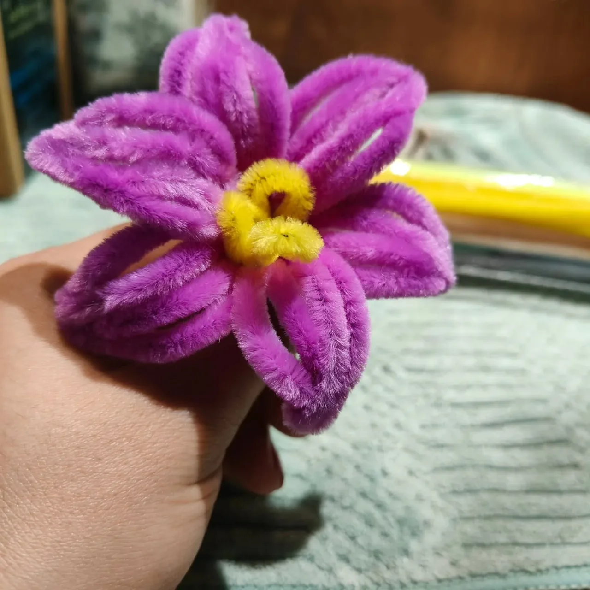
05Handmade pieces
Made by hand
 06
06Home makeovers
Full rooms
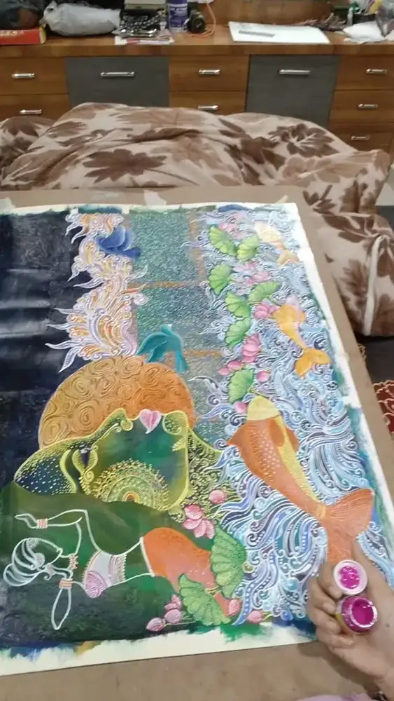
07Commissions
Your idea
- 08
Portraits
On request
How a commission comes together
From a blank surface to the room’s favourite thing.
- 01
Share your idea
A wall, a canvas or a corner of your home. Message Soni on Instagram or by email.
- 02
Shape it together
Talk through the space, the colours and the story you want it to tell.
- 03
Painted by hand
Every piece is made by hand, to fit the space it will live in.
- 04
Live with the art
From a koi pond above the bed to a cafe wall, it becomes the room’s favourite thing.
From the collection
Paintings, lines and handmade colour.
Faces & peacocks
A face with serpentine hair
A lotus in full colour

Faces, flowers & a cat
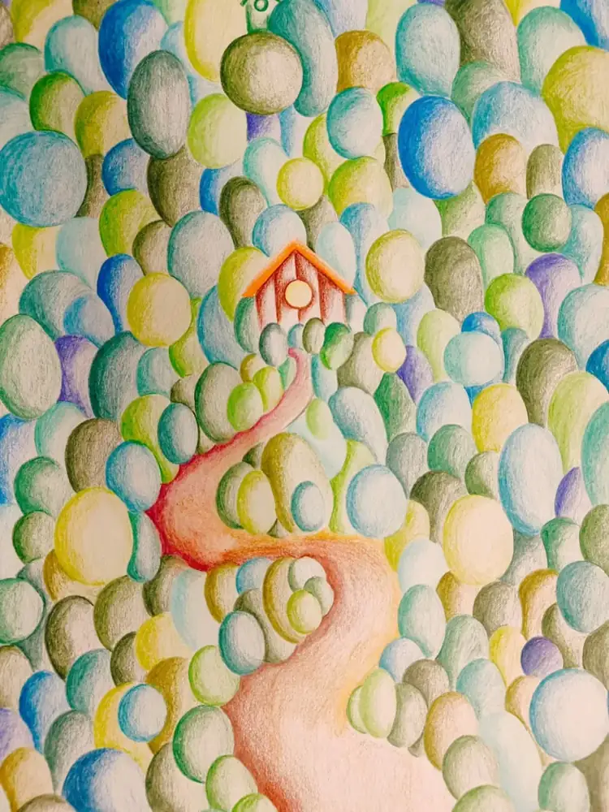
A house in a sea of circles
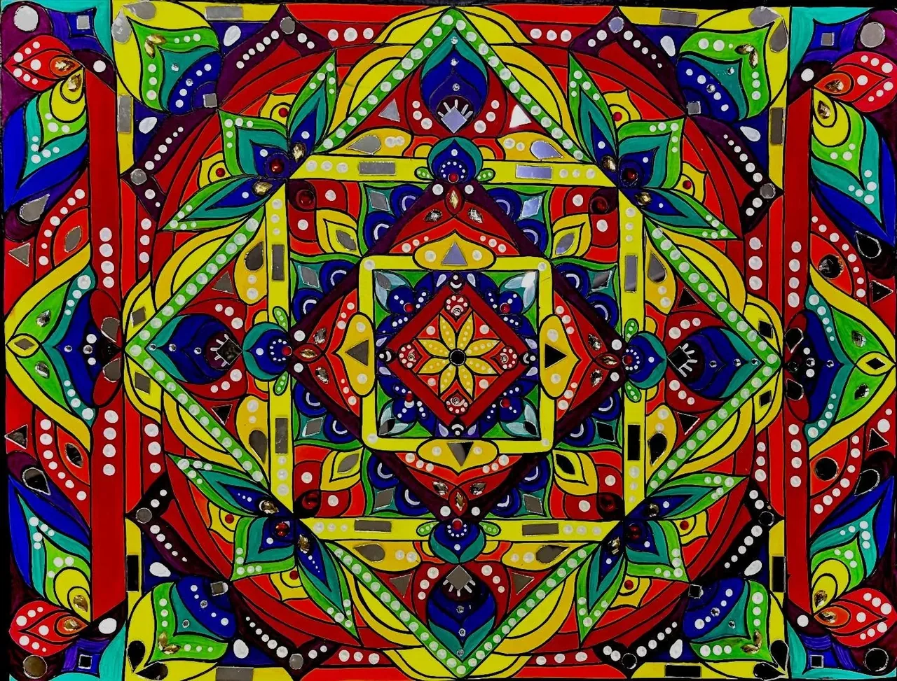
A kaleidoscope of colour
Music & swans
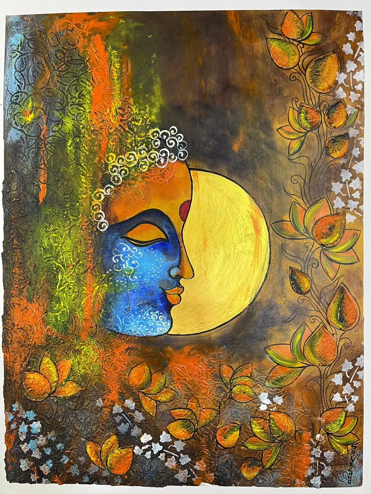
Moonlit colour
A centre of colour


03 · Art at home
Art, lived in.
Framed sets, painted corners and full wall murals in a real family home, including a blue-bubble wall with a very pleased black cat.
See the home tourGallery
The work, all in one place.
Home photos and a video-still from a home tour shared by her family.
04 · The stay · Agra
Don’t just see art.
Stay inside it.
The art does not stop at the gallery, it is a whole home. The Soni Art Casa is the artist’s own Airbnb stay in Agra, with hand-painted walls and art in every corner. An art-filled base in the city of the Taj.
 Her work · @unique_shwecha__
Her work · @unique_shwecha__The artist
Meet Soni. Colour is her language.
Soni (@unique_shwecha__) brings 8+ years of experience in artwork and painting to walls, canvases and everything in between. Her work moves from huge cafe murals to quiet, detailed line art, always led by colour, characters and nature.
From a doodle-covered travel wall to a koi pond above the bed, each piece is made by hand and made to fit the space it lives in.
- 8+years of art & painting
- Handmade, every piece
- Agrahome of The Soni Art Casa
Your next colourful idea
Let’s make something yours.
Commissions, wall art for your home or cafe, or just to say you love the work.